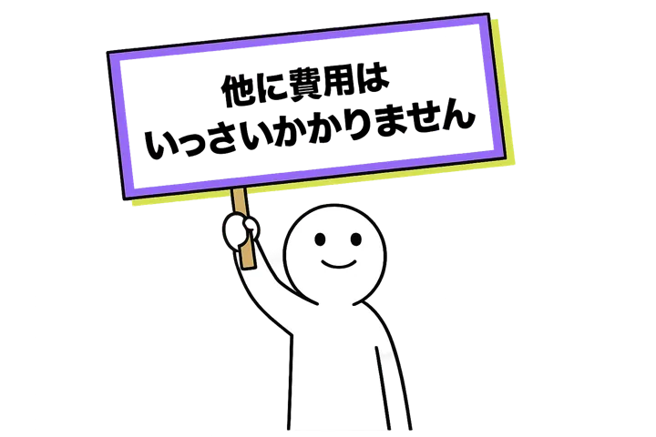

Representative
ご相談は代表が確認します

水間 雄紀
株式会社AIMA 代表取締役
Webマーケは大事だと分かっていても、社内に担当者がいないと動きません。外部に頼んでも、助言だけで実行が止まることがあります。
必要性は分かっていても、テーマ選定、構成、執筆、改善まで社内で続けるのが難しい状態です。
ChatGPTやGeminiにどう引用されるかを見たいが、何から整えるべきか決めきれない状態です。
投稿の企画、作成、改善が属人的になり、忙しい時期に止まってしまう状態です。
DMやメール営業を試しても、文面作成や改善の手が足りず、続ける仕組みになっていない状態です。
このサービスは、相談して終わるコンサルではありません。事業状況に応じて内容をカスタマイズし、必要な施策にリソースを寄せて進めます。
検索から問い合わせにつながるテーマを整理し、記事制作や改善を進めます。必要に応じて、SEOにリソースを全集中する形も可能です。
ChatGPTやGeminiなどのAIに引用される状態を見ながら、自社情報や記事の整備を進めます。
Instagram、X、YouTubeなど、事業に合うSNSの企画・作成・改善を行います。
見込み客に届ける文面や流れを整え、DMやメール営業の実行まで担当します。
外注は使いません。代表の水間がすべて直接実行します。実験的な新サービスのため、受け入れ社数は限定しています。
方針だけを伝えて終わるのではなく、SEO・LLMO・SNS運用・DM/メール営業まで、必要な施策を実際に動かします。
担当者が途中で変わる形ではありません。代表の水間が、あなたの会社のWebマーケ担当として直接実行します。
契約期間の縛りはなく、いつでも解約可能です。施策を形にするため、まずは3ヶ月を推奨しています。
AIMAは、検索、AI引用、SNS運用、顧問契約の現場で実行を続けています。
SEO領域では、大手企業・上場企業を中心に支援しています。
LLMOでは、サービス立ち上げから2日でChatGPT・Geminiに引用され、現在も引用が継続しています。
Instagramは立ち上げ約1ヶ月で合計1万7,000フォロワー、現在も増加中。Xは5,000人、YouTubeは合計7,000人です。
SEO中心・記事本数の上限なしで執筆する顧問契約を、現在も1社と継続しています。
代表の水間が、あなたの会社のWebマーケ担当として直接実行します。
含まれる主な領域

お問い合わせ後、現状を確認し、施策を設計してから実行に入ります。
まずは現在の状況をそのままお聞かせください。
内容を確認してご返信いたします。